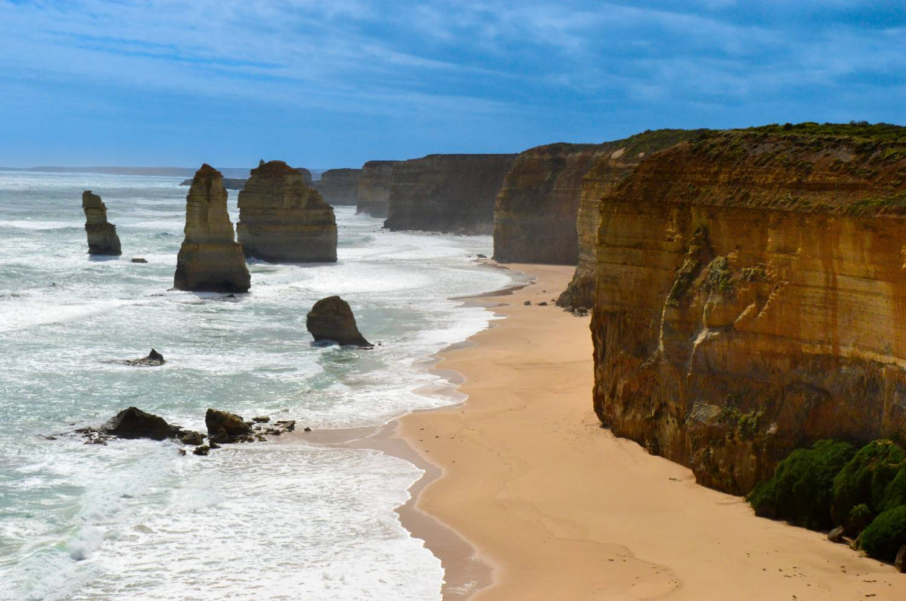

This is the argument for Geelong that needs the least explaining. You are living at the start of one of the world’s great coastal drives, with a capital city on the other side of you.
Twenty-five minutes: Torquay & Bells Beach
The official start of the Great Ocean Road, and the spiritual home of Australian surfing. Bells Beach hosts one of the sport’s oldest professional contests, but the coastline either side is just as good for a beginner or a family. Close enough that it is a weeknight option, not just a weekend one.

Thirty to forty minutes: the Bellarine
Two to three hours: the Great Ocean Road proper
Lorne, Apollo Bay, the Otway rainforest and the Twelve Apostles are all reachable as a long day out, or better as an overnight. It is one of the world’s great coastal drives, and Geelong is where it starts rather than somewhere you fly into to see it.
Thirty to forty minutes inland: the Moorabool Valley & the You Yangs
Cool-climate wine country to the west, and an easy granite-range walk at the You Yangs with views back over Corio Bay and, on a clear day, the Melbourne skyline. The reminder that Geelong’s hinterland is not only coastline.
In the city itself
- A walk or swim at Eastern Beach
- The waterfront carousel and painted bollards
- The National Wool Museum
- Kardinia Park on an AFL match day
- The Barwon River trails for cycling or running
- The Geelong Gallery
- Deakin University’s waterfront campus and public spaces
- A Saturday on Pakington Street
People fly into Melbourne to drive the road that starts at the end of your street.
Bells Beach in twenty-five minutes, the Bellarine in forty, the Twelve Apostles in a long day, and Melbourne itself in an hour the other direction. Geelong is not near the coast — it is where the coast starts, and that is what keeps people here after the job stops being new.